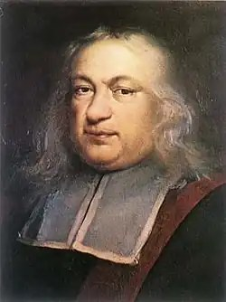
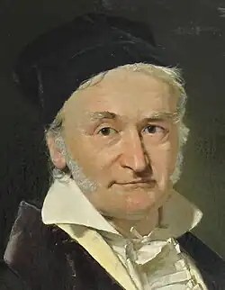
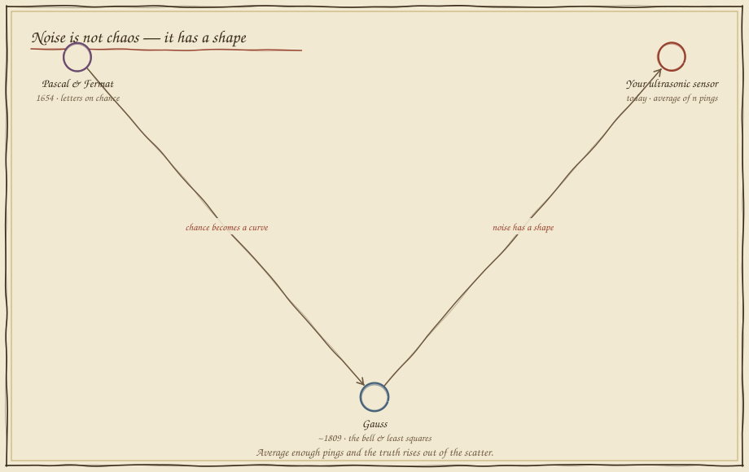
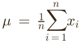
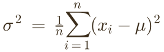
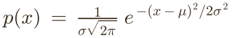

Trusting a Noisy Sensor
In which the same wall reports ten different distances, and a gambler's letter and a lost planet teach the robot to find the one truth hiding inside the scatter.
Ask once, get a different answer
The wall is exactly where it is — it does not move. Yet each ultrasonic ping comes back with a slightly different distance: dust, echoes, warm air, the sensor's own jitter. Fire a ping and stop the rover on that reading. Then fire again.
Every ping lands somewhere near the truth and almost never on it. Trust one and you are trusting its private error. But look closer and the scatter is not lawless — the readings crowd around the true value and thin out to the sides. Noise has a shape, and the shape is the way out.
A wager, a letter, a lost planet
The mathematics of not-knowing began with a gambler's dispute and matured when an astronomer needed to find a speck of light he had only glimpsed. Both turned uncertainty from an enemy into a measurable thing.



The truth rises out of the scatter
Here is the trick that beats noise: don't ask once, ask many times and take the average. Fire pings and watch two things happen — the readings pile into Gauss's bell, and the running mean walks straight to the true distance the more you gather.


How many pings buy how much certainty?
Averaging works, but readings cost time. So the real engineering question is how many. The averaged estimate's own spread shrinks with the square root of n — quadruple the pings to halve the uncertainty. Choose n so the estimate lands inside the tolerance band, and no larger.

What you can now build — and the road ahead
Sensor fusion, GPS averaging, the confidence bars on a self-driving car's obstacle map, the noise models inside a Kalman filter — every one begins with mean, variance, and Gauss's bell. With Folio 08, Stage II — Sensing and Turning is complete: your robot can reach with angles (Folio 05), treat every part as a function (06), read the curves of decay (07), and now trust a jittery world by measuring its scatter. Stage III will teach it to describe motion exactly — vectors, rotations, and the calculus of change.
Field exercise: weigh the same object on a kitchen scale ten times, recording each reading. Average them, then compute the spread. You have just done what Gauss did for Ceres and what your robot does every time it pings a wall — pulled a single trustworthy number out of a crowd of imperfect ones.
return to the codex map revisit folio 05